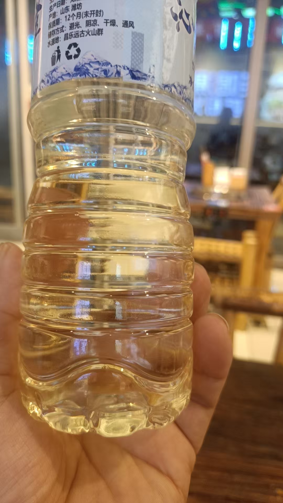
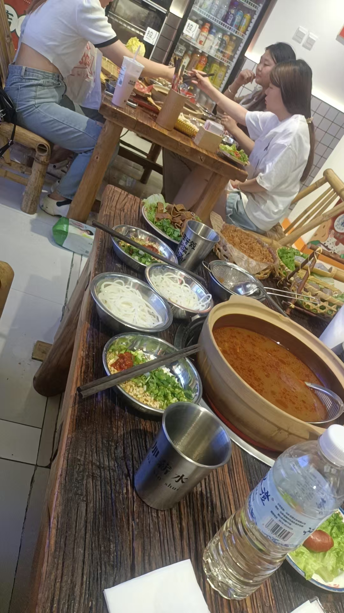

20260627孩子，回家就闹脾气，打爸妈打爷爷
原始对话记录
此酒只因天上有
就看到酒从高维来

螺蛳粉火锅
住着的这孩子，要住到过年
一直没走
在这里就在这里吧，回家就闹脾气，打爸妈打爷爷
在这里啥事没有
在这里每天扫地，拖地，扔垃圾
在家里从没做过
一点一点教会做人
言传身教
我也不是打骂孩子的人
孩子担心不让他在这里，这就是弱点，所以非常听话
赞美酒赞美酒
酒里就会有好多大金珠子
[呲牙][呲牙][呲牙]
[强][强][强]
好酒啊
好酒
欢欢之酒
我还不会酿[呲牙]
好酒，师父，多喝点
排号
带少了[呲牙][呲牙]
[呲牙][呲牙][呲牙]
欢欢排到六年后，可有
嗯嗯，能量提升还要六年呀
确实少了，再带多两瓶，今晚就可以听师父讲故事了
我也想听师父讲故事
很久都没听了[呲牙]
[呲牙]
我也是🙋♀️
@欢欢 之酒
不是排不上号
欢欢不排号
[呲牙][呲牙][呲牙][呲牙]
喝酒之后话多
甚至说话非常严厉
师父，酒后真言，爱听
受戒之后，我得改变自己
一不论国事
二不论家事
三
师父讲一次故事，大家都可以提升一次
如果不是喝一斤半
一般不拿这个手机
[呲牙][呲牙][呲牙][呲牙]
三个手机呢
师父今晚没喝到八两[呲牙]
三个人吃饭
一个人喝酒
一斤一两吧
这两天，我发现一个问题
我不听任何宣传，不听任何报告，不参加任何会议
才发现，我是原汁原味的我
啥也不会，啥也不是
自己的认知，决定了自己
[憨笑][憨笑][憨笑][憨笑]
手机没电了
住下来的那个孩子
住着的这个孩子，要住到过年。一直没走。
在这里就在这里吧。回家就闹脾气，打爸妈打爷爷。在这里，啥事没有。
在这里，每天扫地，拖地，扔垃圾。在家里，从没做过。一点一点教会做人。言传身教。
我也不是打骂孩子的人。
孩子担心不让他在这里，这就是弱点，所以非常听话。
就这些。
后面大多是酒桌上的话。此酒只因天上有。就看到酒从高维来。螺蛳粉火锅。有人排号，说欢欢排到六年后。有人说，能量提升还要六年呀。
这两天，我发现一个问题。我不听任何宣传，不听任何报告，不参加任何会议。才发现，我是原汁原味的我。啥也不会，啥也不是。自己的认知，决定了自己。
喝酒之后话多。甚至说话非常严厉。
手机没电了。